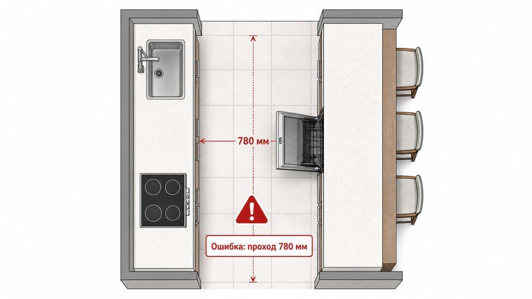
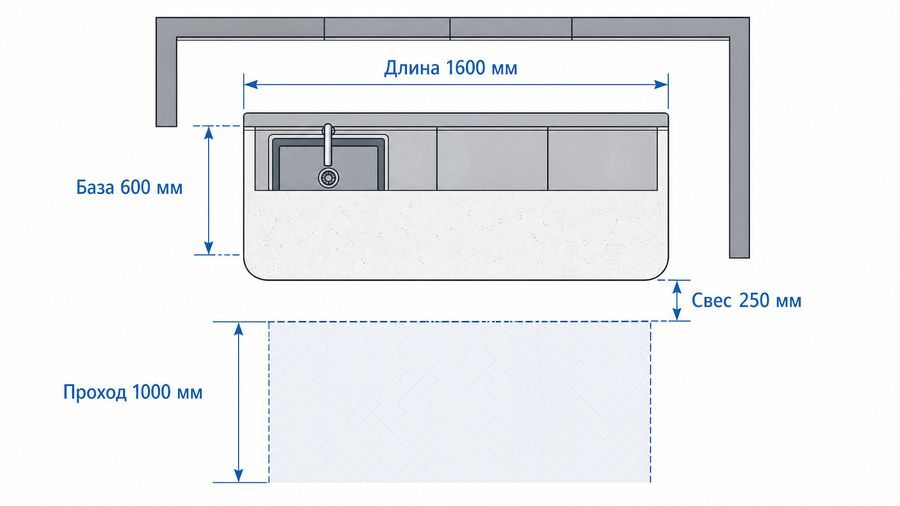

Коротко: полуостров на кухне имеет смысл только при площади от 10–12 м², а лучше — в кухнях-гостиных от 14 м². Комфортная длина полуострова для посадки — 1400–1800 мм, проход перед ним должен быть не менее 900–1000 мм (если открывается техника — до 1200 мм). Ошибка с проходом 150–200 мм превращает кухню в неудобный коридор и стоит 29 000–120 000 руб. переделок. Ниже — точные размеры, варианты наполнения, смета и чек-лист.
Когда полуостров имеет смысл: 4 рабочих сценария
Полуостров — это не остров в миниатюре, а продолжение гарнитура, привязанное к стене или колонне одним торцом. Для него достаточно одного полноценного прохода (в отличие от острова, которому нужно 900–1100 мм с двух сторон).
Лучше всего он работает:
- В Г-образной кухне 10–14 м², закрывая контур и добавляя 1200–1600 мм столешницы.
- В кухне-гостиной 15–22 м² для зонирования без перегородок.
- В студиях 24–35 м², заменяя полноценный обеденный стол.
Откажитесь от идеи, если кухня узкая (2100–2500 мм) или дверной проем расположен напротив будущего полуострова.
Размеры и проходы: главные цифры
Планировка ломается, когда люди рисуют красивую столешницу 1800 мм и забывают про открытые фасады и собственные колени.
| Параметр | Только рабочая зона | С посадкой (2-3 места) | С мойкой |
|---|---|---|---|
| Длина | 1200–1400 мм | 1400–1800 мм | 1400–1800 мм |
| Глубина базы | 600 мм | 600 мм | 600 мм |
| Свес под колени | — | 250–300 мм | 200–250 мм |
| Проход перед полуостровом | 900–1000 мм | 1000–1100 мм | 1000–1200 мм |
| Места для посадки | 0 | 2–3 | 1–2 |
Быстрый расчет: поместится ли в кухне 12 м²
Кухня-гостиная 3,2 х 3,8 м (12,16 м²). Основной ряд 600 мм. Хотим полуостров с посадкой (850 мм) и проход 1000 мм.
Считаем: 3200 − 600 − 1000 − 850 = 750 мм. Это мало, если за полуостровом нужно ходить. Если посадка смотрит в гостиную, а позади свободная комната — решение рабочее. Если там стена — будет тесно.
Совет: сначала рисуйте не мебель, а пустоты. На плане должны появиться проходы 900–1100 мм, и только потом — шкафы, стулья и техника.

Что ставить в полуостров: хранение, посадка, мойка или варка
1. Дополнительная рабочая поверхность (самый безопасный вариант)
База 600 мм глубиной, длина 1200–1600 мм, сверху столешница. Внутри — 2-3 тумбы с ящиками.
Бюджет: 40 000–98 000 руб. Минимум риска, не нужно переносить воду.
2. Мини-столовая (2–3 места)
Требует длины от 1400 мм (для 2 человек) и свеса столешницы 250–300 мм. Высота столешницы — 900 мм, стул нужен 620–660 мм (а не стандартный 450 мм).
Бюджет: 55 000–125 000 руб. (включая стулья и свет).
3. Полуостров с мойкой
Технически сложно. Нужно подвести ХВС/ГВС, обеспечить уклон канализации 3 см на 1 м, сделать ревизию. Если стояк далеко (2,5–3 м), канализация начнет диктовать высоту подиума.
Бюджет: 90 000–180 000 руб.
4. Полуостров с варочной поверхностью
Самый спорный вариант. Нужна вытяжка (островная или потолочная), усиленная электрика (отдельная линия 3х6 мм², автомат 32 А). Перед сидящими людьми нельзя ставить горячие сковородки.
Бюджет: 130 000–320 000 руб.
Электрика и свет над полуостровом
Розетки для кухонного полуострова часто вспоминают слишком поздно, получая удлинители под ногами.
| Элемент | Требования | Цена |
|---|---|---|
| Розетки на полуострове | 2 шт. на мелкую технику + 1 запасная | 3 000–8 000 руб. |
| Линия для варки | Кабель 3х6 мм², автомат 32 А, УЗО | 8 000–15 000 руб. |
| Свет (2 подвеса) | Высота 700–900 мм от столешницы | 9 000–24 000 руб. |
| Диммер | Для регулировки яркости | 2 000–6 000 руб. |
Совет: розетки в торце полуострова удобнее и дешевле врезных блоков в столешницу на 2 000–8 000 руб. (меньше риска залить механизм).
Смета: сколько стоит кухня с полуостровом
Кухня-гостиная 11 м²: основной ряд 3000 мм, полуостров 1600 х 850 мм, 2 посадочных места, без мойки и варки на полуострове.
| Этап работ | Цена |
|---|---|
| Замер и проект | 3 000–12 000 руб. |
| Электрика (3 точки + линия) | 9 000–22 000 руб. |
| Корпуса и фасады полуострова | 30 000–73 000 руб. |
| Столешница (ЛДСП) | 10 000–18 000 руб. |
| Столешница (кварц) | 38 000–75 000 руб. |
| Фурнитура и сборка | 20 000–50 000 руб. |
| 2 полубарных стула | 10 000–30 000 руб. |
| Свет (2 подвеса) | 9 000–24 000 руб. |
| Итого (эконом/средний) | 81 000–230 000 руб. |

Частые ошибки и цена исправления
| Ошибка | Последствие | Цена переделки |
|---|---|---|
| Проход 780 мм вместо 1000 мм | Духовка и ПММ блокируют путь | 29 000–120 000 руб. |
| Полуостров 1200 мм на 3 места | Локти сталкиваются, третьему не хватает 350 мм | 18 000–45 000 руб. |
| Полуостров напротив холодильника | Невозможно открыть дверцу и ящики | 10 000–25 000 руб. |
| Мойка далеко от стояка (3–4 м) | Канализация диктует высоту пола (перепад 60–120 мм) | 12 000–35 000 руб. |
Чек-лист перед заказом
- Площадь кухни позволяет полуостров (от 10–12 м²).
- Проход перед полуостровом — 900–1100 мм.
- Длина для посадки — 1400–1800 мм.
- Свес столешницы под колени — 250–300 мм.
- Розетки и свет заложены до чистовой отделки.
- Выбран сценарий: только работа, столовая, мойка или варка (не все сразу).
- Контур полуострова проверен на полу малярной лентой 1:1.
- Заложен резерв 10–15% на монтажные мелочи.
Вопросы и ответы
Какая минимальная площадь кухни для полуострова?
От 10–12 м². В кухне 7–8 м² полуостров часто превращается в помеху, так как проходы сжимаются до 650–750 мм.
Можно ли сделать полуостров, если кухня узкая (2,5 м)?
Крайне не рекомендуется. При ширине 2500 мм и глубине гарнитура 600 мм останется всего 1900 мм. Полуостров глубиной 600 мм оставит проход 1300 мм, но с учетом открытых дверец и ящиков — это будет тесно.
Чем отличается полуостров от острова?
Полуостров привязан к стене или колонне одним торцом. Для него достаточно одного полноценного прохода (900–1000 мм). Остров стоит отдельно и требует проходов с двух сторон (по 900–1100 мм).
Какой высоты должны быть стулья для полуострова?
При стандартной высоте столешницы 900 мм высота стула должна быть 620–660 мм. Обычные обеденные стулья (450 мм) не подойдут.
Можно ли вывести мойку на полуостров?
Да, но это дорого. Нужно подвести воду, обеспечить уклон канализации 2–3 см на 1 м и предусмотреть ревизию. Если стояк далеко, канализация может потребовать поднятия пола.